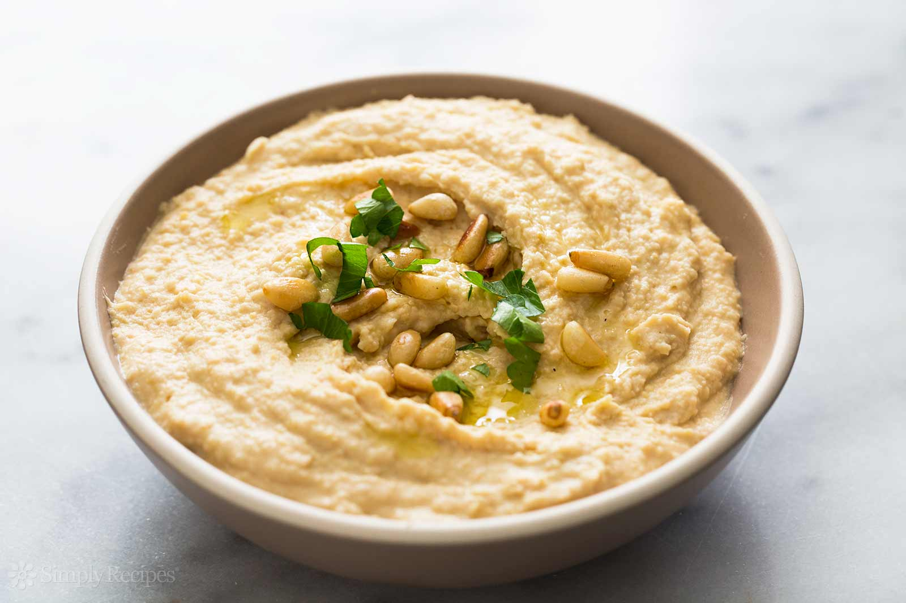

This recipe makes quick, tasty humous, with no messing. It has been adapted from a number of different recipes that I have read over the years.
Company's mailing address can be found hereHumous is a delicious thick paste used heavily in Greek and Middle Eastern dishes. It is very tasty with salad, grilled meats and pitta breads.
Ingredients
Instructions
For a different flavour, you could try blending in a small measure of lemon and coriander, chili pepper, lime and chipotle, harissa and mint, or spinach and feta cheese. Experiment and see what works for you.
Storage
Refrigerate the finished humous in a sealed container. You should be able to use it for about a week after you've made it. If it starts to become fizzy, you should definitely discard it. Humous is suitable for freezing; you should thaw it and use it within a couple of months.
Another of the world class recepies